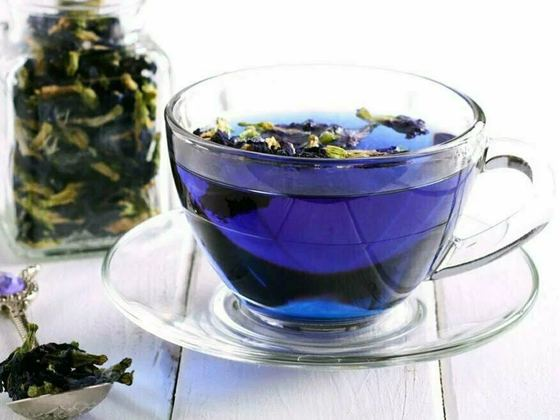
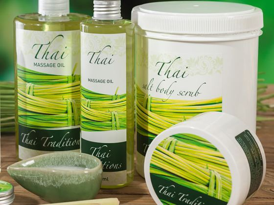
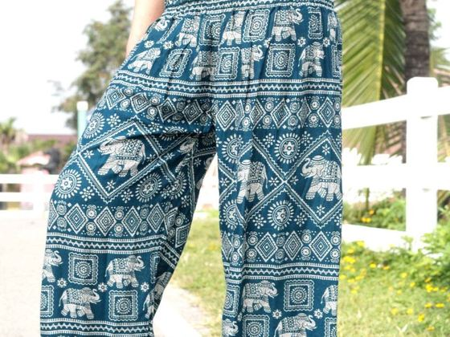

What to Bring Home from Koh Samui
Every time I fly back to Europe I take a half-empty suitcase, and every time it comes back full of the same things. Not souvenirs — the stuff you actually finish and then miss. Thai herbal balm costs a fraction of what a European pharmacy charges for something that works half as well, and that comparison holds for most of this list.
What actually earns its luggage space
Not souvenirs — the things you finish and then miss. Grouped by what they are, rather than by price.
Food and snacks
The category that empties fastest once you're home. Dried fruit that tastes nothing like the sugared stuff in European supermarkets, curry pastes that turn a Tuesday dinner into something worth cooking, chilli pastes, seaweed snacks, local honey. Buy these at a supermarket or market rather than the airport — same products, a fraction of the price.
Tea and coffee
Light, cheap, impossible to get wrong as a gift. Butterfly pea flower tea is the one people always ask about because of the colour. Beyond that there's lemongrass, roselle, pandan, chrysanthemum — and the orange Thai tea everyone recognises from iced tea in cafés.

Skincare, balms and wellness
This is where the price difference is almost comic. Thai herbal balm, inhalers, compress balls, aloe gel, mosquito repellent that actually works — a European pharmacy would charge several times as much for something less effective. I restock every single trip, and it's the thing friends specifically request.

Clothing and jewellery
Fisherman pants that you'll wear far more than you expect, batik, silver, coconut shell and beaded pieces, leather sandals. Made here, priced accordingly, and not the mass-produced airport version if you buy at the markets.

Crafts and home decor
The heavier end, and worth the luggage allowance. Wood carving, woven rattan and basketry, mother-of-pearl inlay, ceramics, textiles, candles and lanterns. These are the things that end up in your flat for years and quietly remind you where you were.
What's in the guide
The full list runs from food and snacks through teas, skincare and wellness, clothing and jewellery, local crafts and home decor, right down to a few things you'll only find on this island. It's built around what my friends have genuinely been pleased to receive — not what a souvenir shop wants to sell you. If you're bringing something back for someone, start there.
All of this in one PDF you can use offline.
Eight pages, 300+ places, no email needed. Save it to your phone before you fly — signal on the island is fine, but not everywhere.